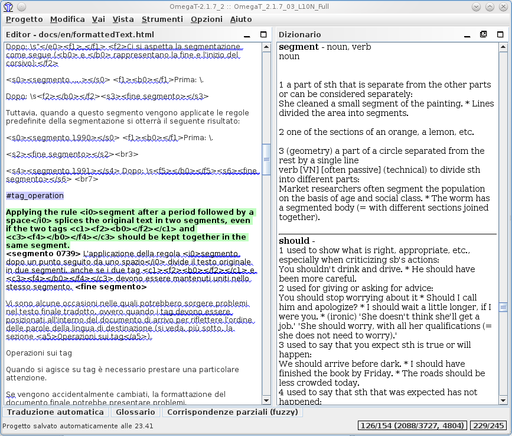

Dizionari
Come scaricare e installare dizionari
I dizionari in OmegaT sono basati sulla piattaforma StarDict. Per installare i file necessari procedere come illustrato di seguito:
- Cercare la combinazione di lingua - ad esempio, nella piattaforma StarDict citata sopra o in FreeDict
- Scaricare il file - deve essere un archivio tarball (estensione tar.bz o tar.bz2).
- Usare untar (o equivalente (per esempio, winrar in Windows) per estrarre il suo contenuto nella cartella del progetto "Dictionary". Ci devono essere tre file, con le estensioni dict.dz, idx e ifo.
Si noti che in aggiunta ai dizionari "origine-destinazione" potete, tramite Dictionary, avere accesso a informazioni tipo:
- Webster's Revised Unabridged
Dictionary (1913)
- Longman Dictionary of
Contemporary English
- Merriam Webster 10th
dictionary
- The Britannica Concise
Encyclopedia
- ... e via discorrendo
Alcuni dizionari non hanno stringhe allegate: per esempio, sono "liberamente consultabili" e alcuni, come la selezione indicata sopra, sono pubblicati sotto licenza GPL. Il seguente esempio mostra il dizionario Merriam Webster 10th "in azione":

Problemi con i dizionari
Se il pannello del dizionario è vuoto, controllare i seguenti punti:
- I file di dizionario sono nella cartella (o in una delle sue cartelle secondarie) specificata nel file del progetto? È stata controllata la finestra Proprietà del progetto (menu Progetto → Proprietà o
Ctrl+E)?
- La cartella contiene tre file con lo stesso nome e con le estensioni dict.dz, idx e ifo? Se esiste almeno un file col nome atteso, controllare allora la sua estensione. Se si presenta come tar.bz, allora ci si è dimenticati di scompattarlo (untar).